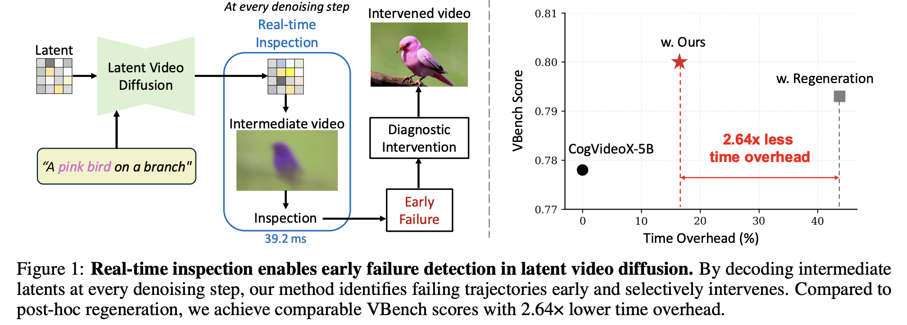
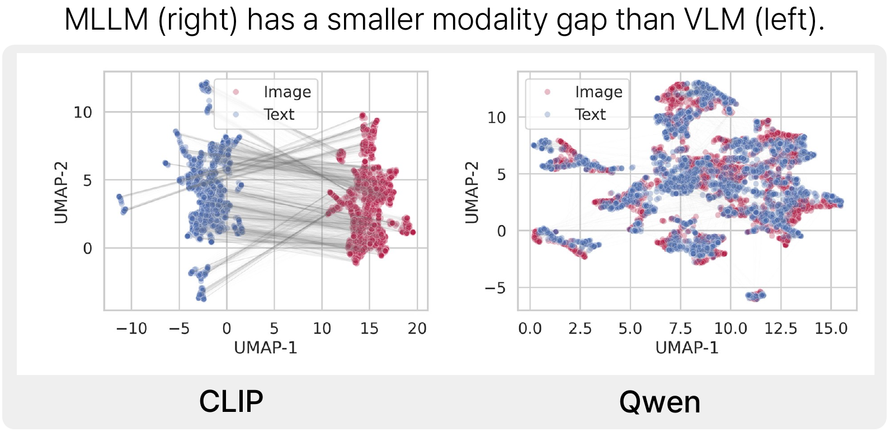
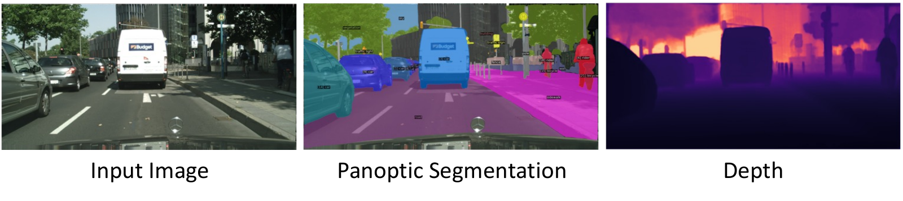
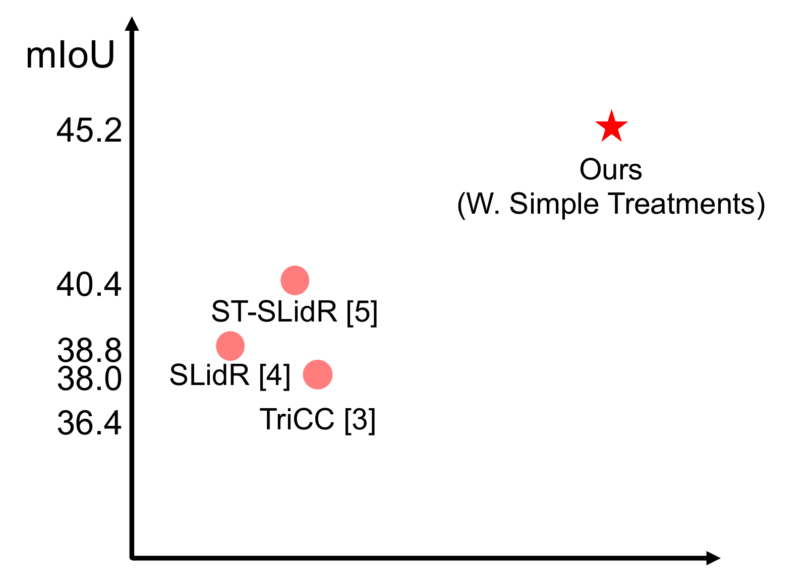
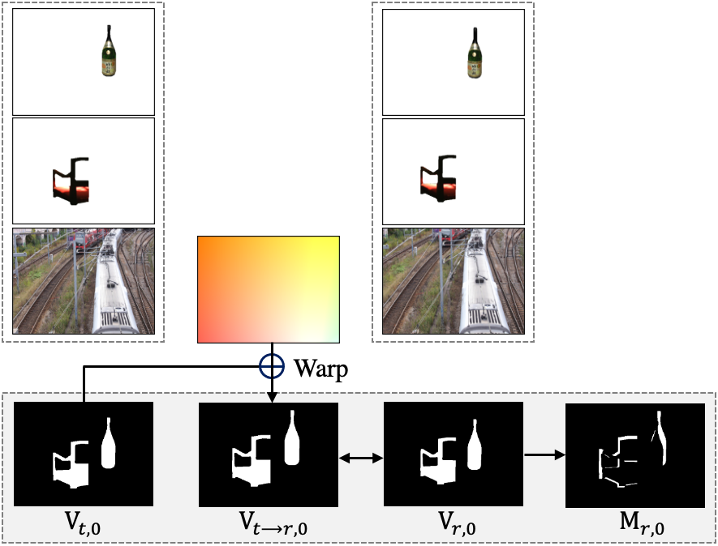
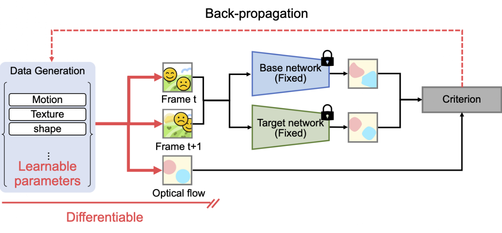

Early Failure Detection and Intervention in Video Diffusion Models
Inspect intermediate video previews to detect failures early and intervene only when needed.
Generative models · Geometry · Motion
Ph.D. candidate in Artificial Intelligence · POSTECH Advisor: Tae-Hyun Oh
Available for full-time positions from February 2027.
My research focuses on visual generative modeling, particularly video generation and interactive world models. Building on motion modeling and 3D geometry, I aim to make visual generation more controllable, consistent, and reliable.
I will serve as an Area Chair.
Paper accepted: Early Failure Detection and Intervention in Video Diffusion Models

Inspect intermediate video previews to detect failures early and intervene only when needed.

Use language to reveal ordinal structure in multimodal model embeddings without labeled examples.
Reconstruct dynamic HDR scenes from monocular videos with alternating exposures.
Earlier version: Dynamic HDR Radiance Fields via Neural Scene Flow (ICCV 2025 Wild3D Workshop).
Study efficient network architectures for real-time video motion magnification.
One joint model for RGB–depth generation, depth estimation, and depth-conditioned image synthesis.
Work performed at Microsoft Research Asia.
Align a diffusion depth prior with sparse measurements at test time for generalizable depth completion.
Make subtle motions easier to interpret by magnifying movement along a user-specified direction.

Unify video panoptic segmentation, depth estimation, and tracking in one model.

Revisit spatial and temporal design choices in image-to-LiDAR representation learning.

Identify the simple data-generation choices that help optical flow models generalize.

Learn to synthesize optical flow training data with a differentiable generation pipeline.
Samsung HumanTech Paper Award · Bronze Prize
Apr 2026 – Oct 2026
Research Intern · Tokyo, Japan
Interactive world model research (release planned for November 2026).
Oct 2025 – Apr 2026
Research Intern · Seoul, Korea
Large-scale data curation for video foundation model training.
Sep 2024 – Mar 2025
Research Intern · Beijing, China
Diffusion-based RGB–depth generation, leading to JointDiT (ICCV 2025).
Mar 2023 – Feb 2027 (expected)
POSTECH
Advisor: Tae-Hyun Oh
Sep 2020 – Feb 2023
POSTECH
Advisor: Tae-Hyun Oh
Mar 2013 – Aug 2019
POSTECH
CVPR 2027
CVPR 2024–2026 · ECCV 2024, 2026 · ICCV 2023, 2025 · ICLR 2026 · NeurIPS 2026 · BMVC 2026